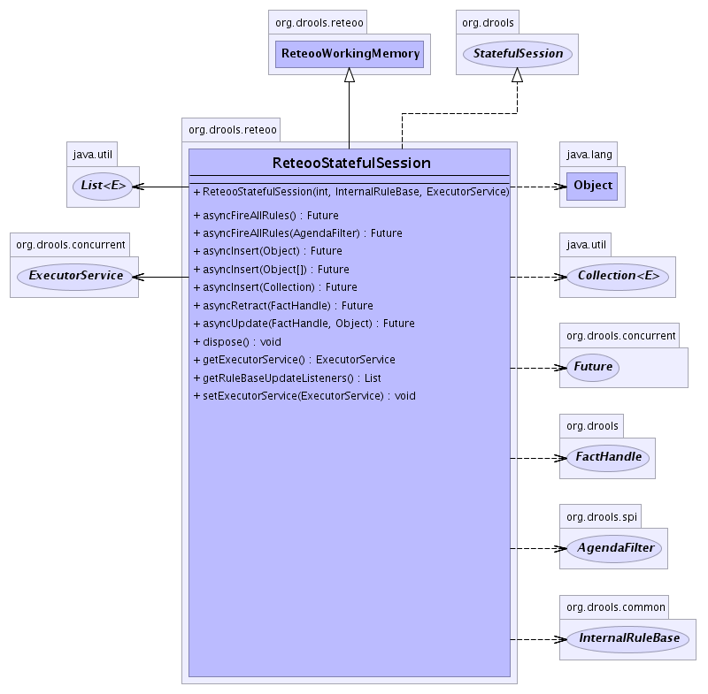

org.drools.reteoo
Class ReteooStatefulSession
java.lang.Object
 org.drools.common.AbstractWorkingMemory
org.drools.reteoo.ReteooWorkingMemory
org.drools.reteoo.ReteooStatefulSession
org.drools.common.AbstractWorkingMemory
org.drools.reteoo.ReteooWorkingMemory
org.drools.reteoo.ReteooStatefulSession
- All Implemented Interfaces:
- java.beans.PropertyChangeListener, java.io.Serializable, java.util.EventListener, EventSupport, InternalWorkingMemory, InternalWorkingMemoryActions, RuleBaseEventManager, StatefulSession, WorkingMemory, WorkingMemoryEventManager
public class ReteooStatefulSession
- extends ReteooWorkingMemory
- implements StatefulSession
- See Also:
- Serialized Form
-
- 
| Fields inherited from class org.drools.common.AbstractWorkingMemory |
__ruleBaseEventListeners, actionQueue, ADD_REMOVE_PROPERTY_CHANGE_LISTENER_ARG_TYPES, addRemovePropertyChangeListenerArgs, agenda, agendaEventSupport, discardOnLogicalOverride, evaluatingActionQueue, firing, globalResolver, halt, handleFactory, id, lock, nodeMemories, NULL, propagationIdCounter, queryResults, ruleBase, ruleFlowEventSupport, tms, workingMemoryEventSupport |
| Methods inherited from class org.drools.common.AbstractWorkingMemory |
addEventListener, addEventListener, addEventListener, addEventListener, addLIANodePropagation, addPropertyChangeListener, clearActivationGroup, clearAgenda, clearAgendaGroup, clearNodeMemory, clearRuleFlowGroup, executeQueuedActions, fireAllRules, fireAllRules, fireAllRules, fireAllRules, getActivationParameters, getActivationParameters, getAgenda, getAgendaEventListeners, getAgendaEventSupport, getAssertMap, getFactHandle, getFactHandleByIdentity, getFactHandleFactory, getFactHandleMap, getFocus, getGlobal, getGlobalResolver, getId, getLock, getNextPropagationIdCounter, getNodeMemory, getObject, getRuleBase, getRuleBaseEventListeners, getRuleFlowEventListeners, getRuleFlowEventSupport, getTruthMaintenanceSystem, getWorkingMemoryEventListeners, getWorkingMemoryEventSupport, halt, insert, insert, insert, insert, insertLogical, insertLogical, isSequential, iterateFactHandles, iterateFactHandles, iterateObjects, iterateObjects, iterateObjectsToList, modifyInsert, modifyInsert, modifyRetract, modifyRetract, propertyChange, queueWorkingMemoryAction, removeEventListener, removeEventListener, removeEventListener, removeEventListener, removeLogicalDependencies, removePropertyChangeListener, retract, retract, setAgendaEventSupport, setAsyncExceptionHandler, setFocus, setFocus, setGlobal, setGlobalResolver, setId, setRuleBase, setRuleFlowEventSupport, setWorkingMemoryEventSupport, startProcess, update, update |
| Methods inherited from class java.lang.Object |
clone, equals, finalize, getClass, hashCode, notify, notifyAll, toString, wait, wait, wait |
| Methods inherited from interface org.drools.WorkingMemory |
clearActivationGroup, clearAgenda, clearAgendaGroup, clearRuleFlowGroup, fireAllRules, fireAllRules, fireAllRules, fireAllRules, getAgenda, getFactHandle, getFocus, getGlobal, getGlobalResolver, getObject, getQueryResults, getQueryResults, getRuleBase, halt, insert, insert, iterateFactHandles, iterateFactHandles, iterateObjects, iterateObjects, modifyInsert, modifyRetract, retract, setAsyncExceptionHandler, setFocus, setFocus, setGlobal, setGlobalResolver, startProcess, update |
ReteooStatefulSession
public ReteooStatefulSession(int id,
InternalRuleBase ruleBase,
ExecutorService executorService)
asyncInsert
public Future asyncInsert(java.lang.Object object)
- Description copied from interface:
StatefulSession
- Insert/Assert an object asynchronously.
(return immediately, even while the insertion is taking effect).
The returned Future object can be queried to check on the status of the task.
You should only use the async methods if you are sure you require a background
insertion task to take effect (a new thread may be created).
If you are not sure, then you probably don't need to use it !
- Specified by:
asyncInsert in interface StatefulSession
asyncRetract
public Future asyncRetract(FactHandle factHandle)
- Specified by:
asyncRetract in interface StatefulSession
asyncUpdate
public Future asyncUpdate(FactHandle factHandle,
java.lang.Object object)
- Specified by:
asyncUpdate in interface StatefulSession
asyncInsert
public Future asyncInsert(java.lang.Object[] array)
- Description copied from interface:
StatefulSession
- Insert/Assert an array of objects..
(return immediately, even while the insertion is taking effect).
The returned Future object can be queried to check on the status of the task.
You should only use the async methods if you are sure you require a background
insertion task to take effect (a new thread may be created).
If you are not sure, then you probably don't need to use it !
- Specified by:
asyncInsert in interface StatefulSession
asyncInsert
public Future asyncInsert(java.util.Collection collection)
- Description copied from interface:
StatefulSession
- Insert/Assert a collect of objects..
(return immediately, even while the insertion is taking effect).
The returned Future object can be queried to check on the status of the task.
You should only use the async methods if you are sure you require a background
insertion task to take effect (a new thread may be created).
If you are not sure, then you probably don't need to use it !
- Specified by:
asyncInsert in interface StatefulSession
asyncFireAllRules
public Future asyncFireAllRules(AgendaFilter agendaFilter)
- Description copied from interface:
StatefulSession
- This will initiate the firing phase (in the background).
And return immediately. The returned Future object can be queried
to check on the status of the task.
- Specified by:
asyncFireAllRules in interface StatefulSession
asyncFireAllRules
public Future asyncFireAllRules()
- Description copied from interface:
StatefulSession
- This will initiate the firing phase (in the background).
And return immediately. The returned Future object can be queried
to check on the status of the task.
- Specified by:
asyncFireAllRules in interface StatefulSession
dispose
public void dispose()
- Description copied from interface:
StatefulSession
- Forces the workingMemory to be derefenced from
- Specified by:
dispose in interface StatefulSession
getRuleBaseUpdateListeners
public java.util.List getRuleBaseUpdateListeners()
- Specified by:
getRuleBaseUpdateListeners in interface StatefulSession
getExecutorService
public ExecutorService getExecutorService()
- Specified by:
getExecutorService in interface InternalWorkingMemory- Overrides:
getExecutorService in class AbstractWorkingMemory
setExecutorService
public void setExecutorService(ExecutorService executor)
- Specified by:
setExecutorService in interface InternalWorkingMemory- Overrides:
setExecutorService in class AbstractWorkingMemory